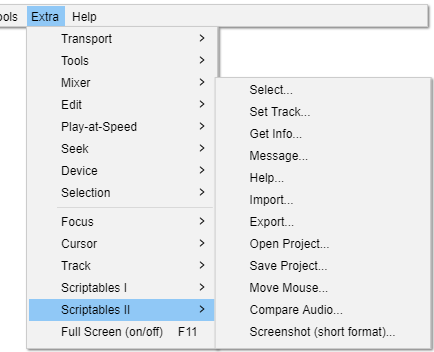

Extra Menu: Scriptables II
- 
Many of these commands have optional values.
|
Select
{kind=link}
Selects audio. See the corresponding discussion on the Scriptables I page for what the various fields do.
Set Track
{kind=link}
Sets values for selected tracks. See the corresponding discussion on the Scriptables I page for what the various fields do.
Get Info
{kind=link}
Gets information in a list in one of three formats.
Message
{kind=link}
Used in testing. Sends the Text string back to you.
Help
{kind=link}
This is an extract from GetInfo Commands, with just one command.
Import
{kind=link}
Imports from an audio file. The automation command uses a text box to get the file name rather than a normal file-open dialog.
You have to give the full file name (including path and filename extension).
Export
{kind=link}
Exports to a file. When using Export2 you have to give the full file name (including path and filename extension).
- File Name: file name.
- Number of Channels: 1 for mono, 2 for stereo.
Open Project
{kind=link}
Opens an Audacity project.
Save Project
{kind=link}
Saves an Audacity project.
Move Mouse
{kind=link}
Experimental command (called Drag in scripting) that moves the mouse.
An Id can be used to move the mouse into a button to get the hover effect.
Window names can be used instead of Ids.
If To is specified, the command does a drag, otherwise just a hover.
| This IS an experimental command, and it is tricky to use effectively. It is best to look at example scripts to see how it can be used. |
Compare Audio
{kind=link}
Compares selected range on two tracks. Reports on the differences and similarities.
Screenshot (short format)
{kind=link}
A version of with a more minimal GUI. One of the most useful options is All_Tracks.
The _Plus suffix includes the timeline.